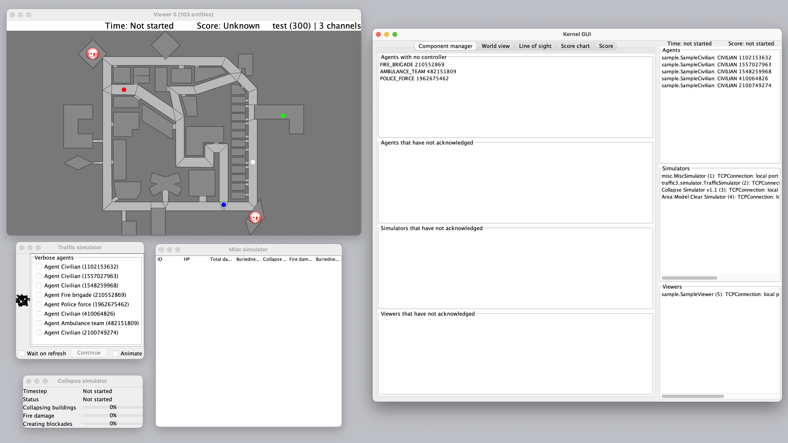

Environment Setup
To install adf-core-python, the following prerequisites are required. If they are already installed on your PC, you do not need to reinstall them.
Prerequisites
Git
Python 3.12 or higher
OpenJDK 17
Refer to the following pages for installation methods for each OS
How to install prerequisites on Windows
Installing the Simulation Server
Next, install the RoboCup Rescue Simulation server.
Note
Create and specify any directory as WORKING_DIR.
mkdir WORKING_DIR
cd WORKING_DIR
git clone https://github.com/roborescue/rcrs-server.git
cd rcrs-server
./gradlew completeBuild
If the following message is displayed when you build, it is successful.
BUILD SUCCESSFUL in ...
Simulation Server Operation Check
cd scripts
./start-comprun.sh -m ../maps/test/map -c ../maps/test/config

If several windows are displayed as shown above, it is successful. Press Ctrl + C (or Command + C on MacOS) in the command line to stop the simulation server.
Warning
After stopping the simulation server, run ./kill.sh as there may be remaining processes.